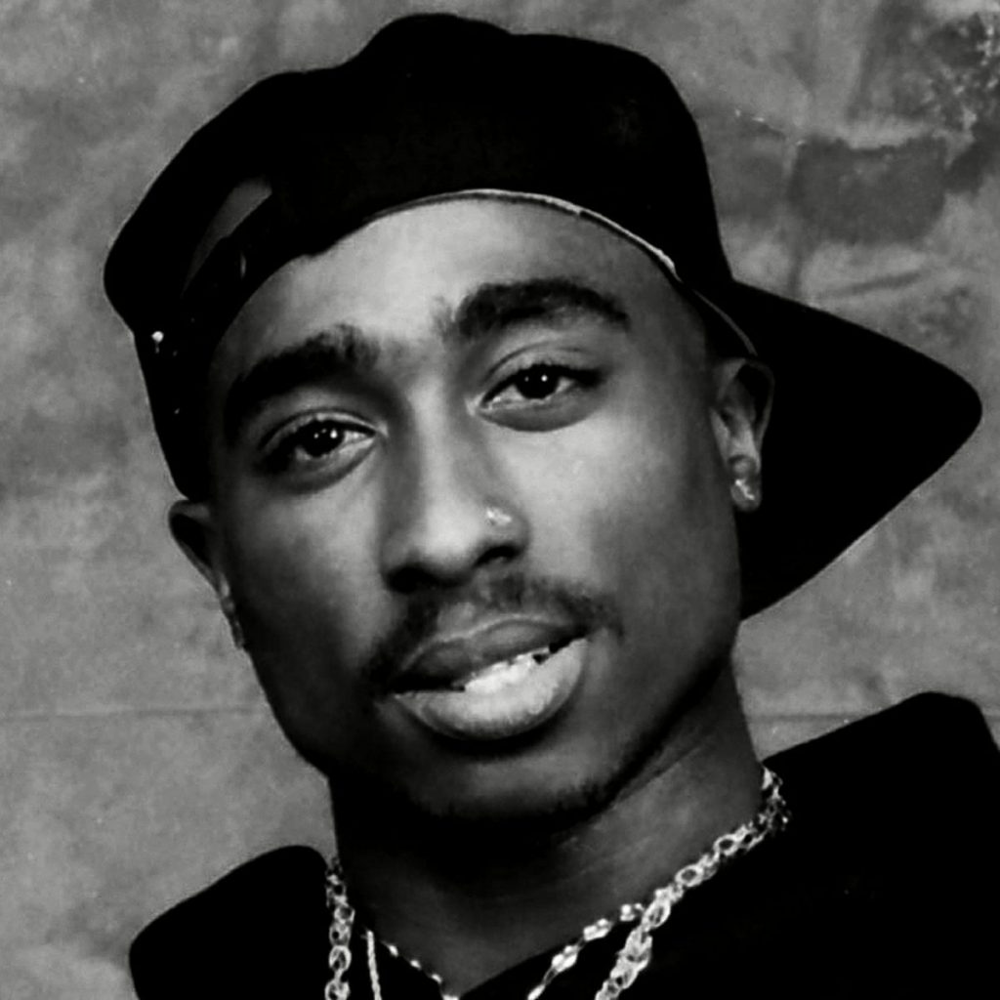

Hip Hop
El hip hop o hiphop Es una cultura en el sur del Bronx y Harlem, en la ciudad de Nueva York por afroamericanos durante la década de los 1970. Si bien el términoel hip hop rap se usa a menudo para referirse al estilo musical y al estilo de vida, se considera que el hip hop no solo se circunscribe al ámbito musical y por el contrario consta de cuatro principales elementos: rap (oral: recitar o cantar), turntablism o "DJing" (auditiva o musical), breaking (físico: baile) y graffiti (visual: pintura). A pesar de sus variados y contrastados métodos de ejecución, se asocian fácilmente con la pobreza y la violencia que subyace al contexto histórico que dio nacimiento a la subcultura. Para este grupo de jóvenes, ofrece rebelarse en contra de las desigualdades y penurias que se vivían en las áreas urbanas de escasos recursos de Nueva York así que el hip hop funcionó inicialmente, como una forma de auto-expresión que propondría reflexionar, proclamar una alternativa, tratar de desafiar o simplemente evocar el estado de las circunstancias de dicho entorno, favoreciendo su desarrollo artístico. Incluso mientras continúa la historia contemporánea, a nivel mundial, hay un florecimiento de diversos estilos en cada uno de los cuatro elementos, adaptándose a los nuevos contextos en los que se ha inmerso el hip hop, sin desligarse de los principios fundamentales, los cuales proporcionan estabilidad y coherencia a la cultura
El origen de la cultura se deriva de las fiestas callejeras por los Ghetto Brothers. Cuando se conectaban los amplificadores para sus instrumentos y altavoces en las farolas de la 163rd Street y Prospect Avenue. La misma idea de tomar energía de esta calle colgándose a las farolas las retomó DJ Kool Herc después de sus fiestas en la sala de recreo del condominio en el 1920 de Sedgwick Avenue, en donde hizo mezcla de los intermedios percusivos breaks de los temas soul y funk para impresionar a la multitud y especialmente de algunos bailarines que buscaban esos 'breaks' para lucirse en sus habilidades gimnastas b-boys, mientras algún MC animaba las fiestas y rimaba al ritmo, es decir rapeaban, de los diferentes beats, al tiempo que varios bailarines competían, en ocasiones de otras pandillas. No es sorpresa que Kool Herc sea reconocido como el "padre" del hip hop. El DJ Afrika Bambaataa en conjunto con Zulu Nation, diseño los pilares de la cultura hip pop, a la que él acuñó los términos: MCing o "Emceein", DJing o "Deejayin", b-boying y graffiti o aerosol writin.